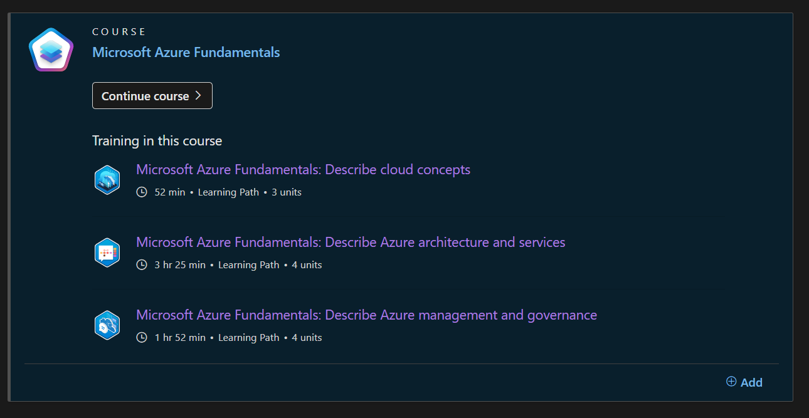
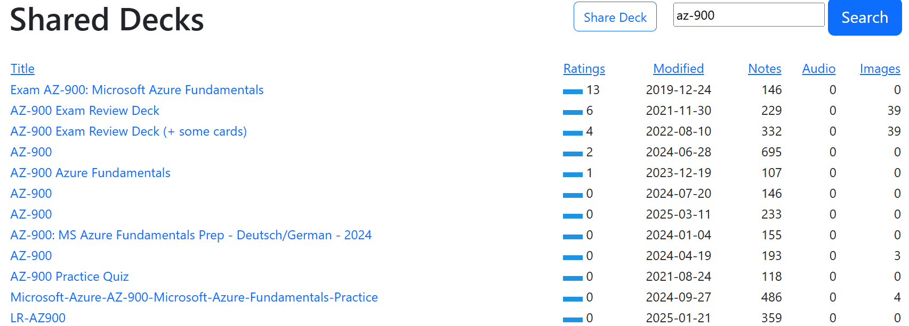
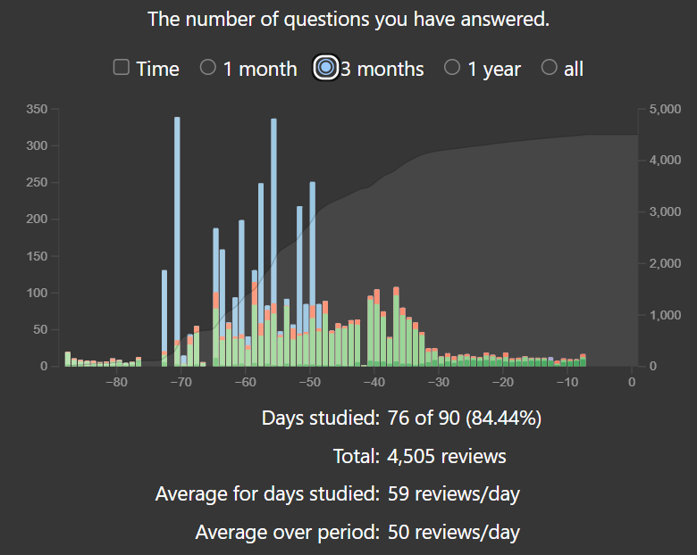
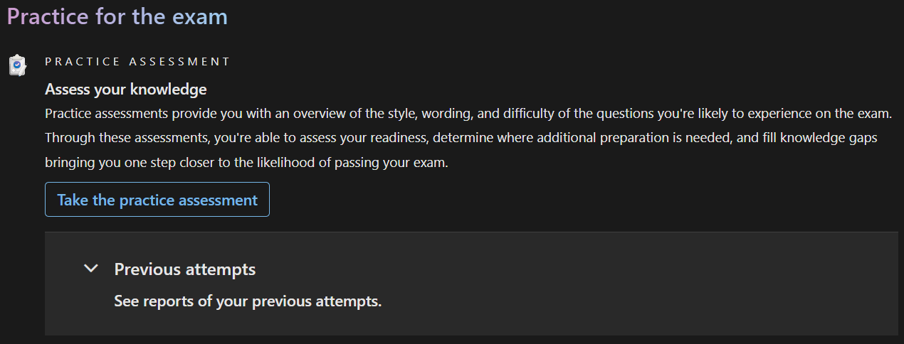
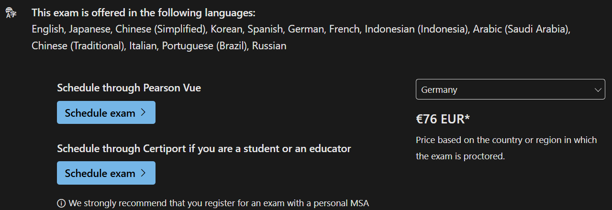

🎓 My Microsoft Certification Journey (AZ-900)
This is how I approached the Microsoft certification. It helped me structure learning and build long-term
knowledge effectively.
✅ Step 1: Use Microsoft Learn
Microsoft Learn is the go-to platform, though
initially overwhelming due to the abundance of material.
📚 Step 3: My Practice Routine
- Work through each module.

- Create Anki cards along the way.
- Repeat this process until all modules are covered.
- Import cards from shared decks:
Shared AZ-900 Decks

- Practice flashcards daily (~20 min/day). Took me 3 months to master all content.
- Test yourself with a practice exam.

🧠 Why I Love Anki
Anki is a flashcard app using spaced repetition to
optimize memory.
- Simple, powerful, and supports rich content.
- Great for consistent, daily study.
- Helps you learn long-term — not just cram.
- I’ve used Anki for years, including my bachelor's in computer science. It was essential to my success.
📢 I highly recommend Anki to anyone learning technical material.
🏁 Step 4: Get Certified
- Register via Pearson VUE (I took it
online).

- Take the exam — mostly multiple choice and true/false questions.
If you’ve prepared thoroughly, you’ll pass with confidence!
💡 Final Tips
- Set a clear goal from the start.
- Use spaced repetition — it’s a game changer.
- Practice regularly, track your progress, and enjoy the process!
🎉 Good luck on your certification journey!